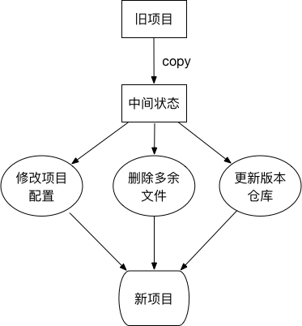
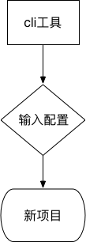
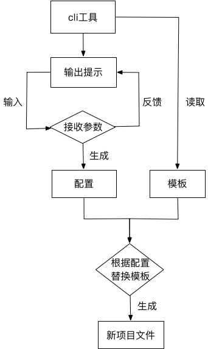

传统的前端项目初始流程一般是这样：

可以看出，传统的初始化步骤，花费的时间并不少。而且，人工操作的情况下，总有改漏的情况出现。这个缺点有时很致命。
甚至有马大哈，没有更新项目仓库地址，导致提交代码到旧仓库，这就很尴尬了。。。
基于这些情况，编写命令行工具（CLI）的目的就很明确：
以下是新的流程示意图：

以下是自动化流程图：

从流程图可以得出两个重要的信息：
命令行工具的角色，是负责将两个信息进行融合，提供一个交互平台给用户。
配置信息的获得，需要靠和用户进行交互。由于程序员一般是用终端输入命令进行项目操作。所以，这里选择了两个工具进行支撑。
借鉴Ruby commander理念实现的命令行执行补全解决方案
commander可以接收命令行传入的参数
例子：
npg-cli --help
♫ ♫♬♪♫ npm-package-cli ♫ ♫♬♪♫
Usage: npg-cli [options]
Options:
-V, --version output the version number
-h, --help output usage information
run testcli and edit the setting.常用交互式命令行用户界面的集合。
inquirer用询问式的语句，与用户进行交互，接收参数
例子：
npg-cli
♫ ♫♬♪♫ npm-package-cli ♫ ♫♬♪♫
Follow the prompts to complete the project configuration.
? project name test
? version 1.0.0
? description前端的JavaScript 模板引擎，比如ejs，jade等。可以根据传入的参数，对模板标签进行替换，最终生成html。
如果把所有项目文件，不管文件后缀名，都看成是ejs模板，则可以在文件内容中使用ejs语法。
再根据配置信息进行替换，最终生成新文件。
其实，业界依据这个想法，已经有成熟的工具产生。
mem-fs是对文件进行读取，存入内存中。
mem-fs-editor是对内存中的文件信息，使用ejs语法进行编译。最后调用commit方法输出最终文件。
提示信息，除了console.log，还可以使用色彩更丰富的chalk。
这样，可以输出更直观、友好的提示。
文件操作，有业界成熟的shelljs。
利用shelljs，可以在项目中简化以下步骤：
shelljs.copySync同步方式生成。shelljs.mkdir进行创建以下按我做的开源项目——npm-package-cli的创作过程进行分拆、讲解。
新建项目文件夹npm-package-cli，并在该文件夹下运行npm init，生成package.json。
项目结构如下：
npm-package-cli
|-- package.json这里要生成的全局指令是npg-cli。
新建文件夹bin,并在文件夹下新建名称为cli的shell脚本文件（注意：不能有后缀名）。
clishell脚本文件内容如下：
#!/usr/bin/env node
console.log('hello world');其中，#!/usr/bin/env node是告诉编译器，以node的方式，运行代码。
并在package.json加入以下内容：
"bin": {
"npg-cli": "bin/cli"
}此时，项目结构如下：
npm-package-cli
|-- bin
|-- cli
|-- package.json链接指令有两种方式：
npm linknpm install -g两种方式，都需要在npm-package-cli文件夹下运行，才能生效。
作用是把npg-cli指令，指向全局的bin文件下，实现软链。
在任意文件夹下运行命令：
npg-cli
# 输出
hello world到这里，一个基本的指令就算完成了，接下来是指令的工作内容细化。
Creation的作用是整合所有操作，并提供接口给指令文件cli。
Creation的结构如下:
class Creation{
constructor(){
// code
}
do(){
// code
}
// other function
}其中do方法暴露给脚本文件cli调用。
Creation类放在src/index.js中。
此时，项目结构如下：
npm-package-cli
|-- bin
|-- cli
|-- src
|-- index.js
|-- package.jsoncli文件#!/usr/bin/env node
const Creator = require('../src/index.js');
const project = new Creator();
project.do();
这样，只要实现好do方法，就可以完成npg-cli指令的运行了。
实现npg-cli --help，需要借助上文提到的工具commander。
新建src/command.js文件，文件内容如下：
const commander = require('commander');
const chalk = require('chalk');
const packageJson = require('../package.json');
const log = console.log;
function initCommand(){
commander.version(packageJson.version)
.on('--help', ()=>{
log(chalk.green(' run testcli and edit the setting.'));
})
.parse(process.argv);
}
module.exports = initCommand;此时，项目结构如下：
npm-package-cli
|-- bin
|-- cli
|-- src
|-- command.js
|-- index.js
|-- package.json然后在Creation.do方法内执行initCommand()即可生效。
// src/index.js Creation
const initCommand = require('./command');
class Creation{
// other code
do(){
initCommand();
}
}此时，运行npg-cli --help指令，就可以看到：
Usage: npg-cli [options]
Options:
-V, --version output the version number
-h, --help output usage information
run testcli and edit the setting.要获取用户输入的信息，需要借助工具inquirer。
新建src/setting.js文件，文件内容如下：
const inquirer = require('inquirer');
const fse = require('fs-extra');
function initSetting(){
let prompt = [
{
type: 'input',
name: 'projectName',
message: 'project name',
validate(input){
if(!input){
return 'project name is required.'
}
if(fse.existsSync(input)){
return 'project name of folder is exist.'
}
return true;
}
},
// other prompt
];
return inquirer.prompt(prompt);
}
module.exports = initSetting;此时，项目结构如下：
npm-package-cli
|-- bin
|-- cli
|-- src
|-- command.js
|-- index.js
|-- setting.js
|-- package.json然后在Creation.do方法内执行initSetting()即可生效。
// src/index.js Creation
const initCommand = require('./command');
const initSetting = require('./setting');
class Creation{
// other code
do(){
initCommand();
initSetting().then(setting => {
// 用户输入完成后，会得到全部输入信息的json数据 setting
});
}
}这里，inquirer.prompt方法装载好要收集的问题后，返回的是Promise对象。收集完成之后，要在then方法内拿到配置信息，以便进行下一步模板替换的操作。
模板文件替换，要用到工具mem-fs和mem-fs-editor。
文件操作，要用到工具shelljs。
新建src/output.js文件，文件内容如下（删除了部分代码，以下只是示例，完整项目看最后分享链接）：
const chalk = require('chalk');
const fse = require('fs-extra');
const path = require('path');
const log = console.log;
function output(creation){
return new Promise((resolve, reject)=>{
// 拿到配置信息
const setting = creation._setting;
const {
projectName
} = setting;
// 获取当前命令行执行环境所在文件夹
const cwd = process.cwd();
// 初始化文件夹path
const projectPath = path.join(cwd, projectName);
const projectResolve = getProjectResolve(projectPath);
// 新建项目文件夹
fse.mkdirSync(projectPath);
// copy文件夹
creation.copy('src', projectResolve('src'));
// 根据配置信息，替换文件内容
creation.copyTpl('package.json', projectResolve('package.json'), setting);
// 将内存中的文件，输出到硬盘上
creation._mfs.commit(() => {
resolve();
});
});
}
module.exports = output;output方法的作用：
mem-fs-editor的copyTpl方法）这里最重要的一步，是调用mem-fs-editor的方法后，要执行mem-fs-editor的commit方法，输出内存中的文件到硬盘上。
在Creation.do方法中，调用output方法即可输出新项目文件。
打开src/index.js文件，文件内容增加如下方法：
// src/index.js Creation
const initCommand = require('./command');
const initSetting = require('./setting');
const output = require('./output');
class Creation{
// other code
do(){
initCommand();
initSetting().then(setting => {
// 用户输入完成后，会得到全部输入信息的json数据 setting
this._setting = Object.assign({}, this._setting, setting);
// 输出文件
output(this).then(res => {
// 项目输出完成
});
});
}
}自动初始化一个项目的流程不外乎以下三点：
命令行工具，是对这三点的有效整合，串连成一个规范的流程。
命令行工具中，使用的第三方工具包，都需要用--save的方式安装。
体现在package.json的表现是dependencies字段：
"dependencies": {
"chalk": "^2.4.2",
"commander": "^3.0.0",
"fs-extra": "^8.1.0",
"inquirer": "^6.5.0",
"mem-fs": "^1.1.3",
"mem-fs-editor": "^6.0.0",
"shelljs": "^0.8.3"
},这样，其他用户在安装你发布的CLI工具时，才会自动安装这些依赖。
.gitignore文件npm官方是默认去除.gitignore文件的，不管你用任何方式声明.gitignore文件需要publish。
解决方式是：将.gitignore改名称，比如改为gitignore。当使用CLI工具时，再将文件名改回来。
例子：
creation.copy('gitignore', projectResolve('.gitignore'));我创作的npm-package-cli，是专门用于生成个人npm package项目的CLI工具。
生成的项目，囊括以下功能点：
coverageCHANGELOG.mdCLI工具安装方式：
npm install -g npm-package-cli开源仓库地址：https://github.com/wall-wxk/npm-package-cli
如果对你有所帮助，麻烦给个Star，你的肯定是我前进的动力～